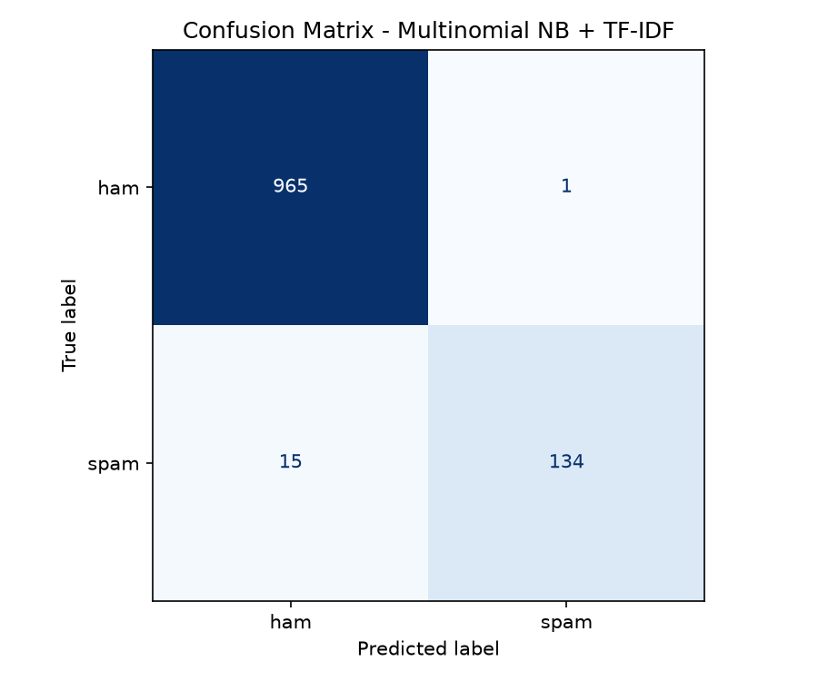

Machine learning pipeline for SMS spam detection using TF-IDF feature extraction and multiple classification algorithms. Trained on the SMS Spam Collection dataset.
v0.2.0 · scikit-learn · FastAPI · SQLiteThis project implements a complete SMS spam classification pipeline — from raw text preprocessing through model training, evaluation, persistence, and inference via a REST API with realtime WebSocket events.
| Component | Details |
|---|---|
| Dataset | spam.csv — SMS Spam Collection (5,572 messages) |
| Features | TF-IDF word n-grams + optional char n-grams + hand-crafted |
| Baseline Model | Multinomial Naive Bayes (α = 0.1) |
| Train/Test Split | 80/20 stratified (random_state=42) |
| Backend | FastAPI + SQLAlchemy (SQLite) + WebSocket events |
| Artifact Storage | artifacts/ directory (joblib + PNG + SQLite) |
Baseline model trained on the SMS Spam Collection using train_spam_classifier.py. Pipeline: TF-IDF (1-2 grams, min_df=2, sublinear_tf) → MultinomialNB (α=0.1).
Metrics computed on the held-out test set (1,115 samples). Positive class = spam.

| Property | Value |
|---|---|
| Total messages | 5,572 |
| Ham messages | 4,825 (86.6%) |
| Spam messages | 747 (13.4%) |
| Training set size | 4,457 |
| Test set size | 1,115 |
| Split strategy | Stratified 80/20 |
| Random state | 42 |
| Encoding | latin-1 |
| Parameter | Value |
|---|---|
| Vectorizer | TfidfVectorizer |
| N-gram range | (1, 2) — unigrams + bigrams |
| min_df | 2 |
| sublinear_tf | True |
| Classifier | MultinomialNB |
| Alpha (smoothing) | 0.1 |
| File | Description |
|---|---|
artifacts/confusion_matrix.png | Confusion matrix heatmap visualization |
artifacts/spam_classifier.db | SQLite database with model records and run history |
artifacts/model_*.joblib | Serialized fitted pipeline (joblib format) |
The pipeline supports 7 classification backends. Select via the algorithm parameter in POST /models/train.
Fast probabilistic baseline, excellent on high-dimensional sparse text features. Default choice.
ACTIVE · baselineVariant designed for imbalanced datasets. Corrects the severe assumptions of Multinomial NB.
availableLinear model with L2 regularization. Strong all-rounder for text, provides calibrated probabilities.
availableMaximum-margin classifier wrapped with Platt scaling for probability output. Excellent precision.
availableCombines NB + LR + LinearSVC via averaged predicted probabilities. Best F1 in most runs.
availableGradient-boosted trees on TF-IDF + TruncatedSVD + hand-crafted features. Handles non-linearity.
available · optional depFast histogram-based GBDT. Same feature set as XGBoost, often faster to train on large data.
available · optional dep| Feature | Default | Description |
|---|---|---|
word TF-IDF | Always on | Word-level n-grams (1-2) with sublinear TF scaling |
char_wb TF-IDF | Off | Character n-grams (3-5) at word boundaries. Toggle: use_char_ngrams=true |
Hand-crafted | Off | has_url, digit_ratio, uppercase_ratio, length. Toggle: use_handcrafted=true |
| Option | Description |
|---|---|
tune_threshold | Auto-tune decision threshold on validation split to maximize spam F1 |
cv_folds | Stratified k-fold cross-validation (2-10 folds) on training set |
svd_components | TruncatedSVD dimensionality for GBDT backends (default: 200) |
ensemble_estimators | List of classifiers for the voting ensemble |
Run with uvicorn app:app --port 8000. Full OpenAPI docs at /docs.
| Method | Path | Description |
|---|---|---|
GET | /health | Health check — returns model count and status |
POST | /models/train | Start a background training run (202 Accepted) |
GET | /models | List all trained models with summary metrics |
GET | /models/{id} | Full model detail including config and metrics |
POST | /predict | Run inference on a list of SMS texts |
GET | /runs | List all training runs |
GET | /runs/{id} | Run detail with progress and timing |
WS | /ws/events | Realtime progress + model/run events |
| Event Type | When | Payload |
|---|---|---|
hello | On connect | Server version + timestamp |
progress | During training | run_id, percent, stage |
run.completed | Training finishes | run_id, model_id, status, duration |
model.created | Model persisted | model_id, name, algorithm, metrics |